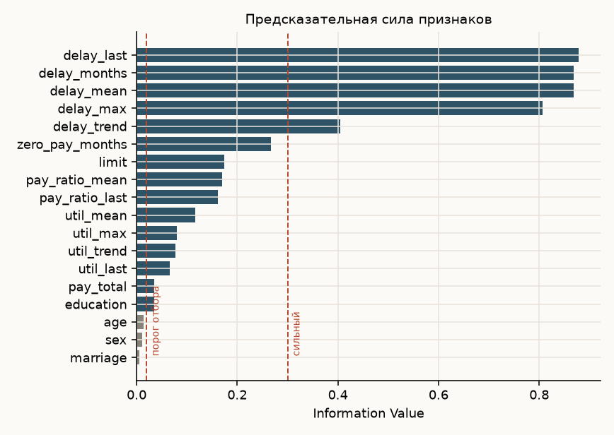
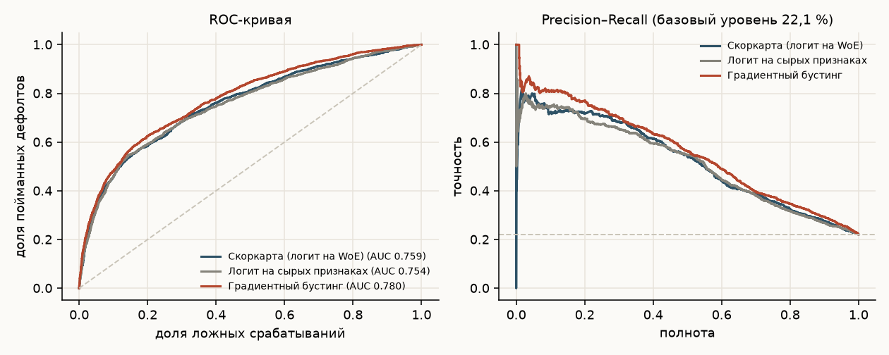
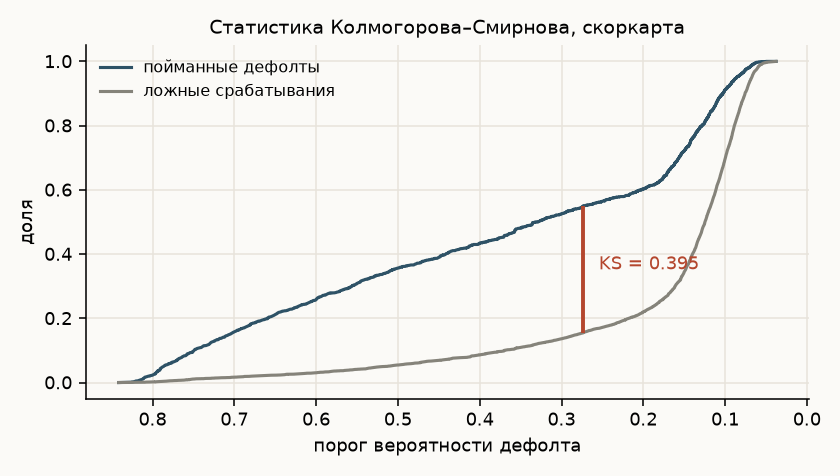
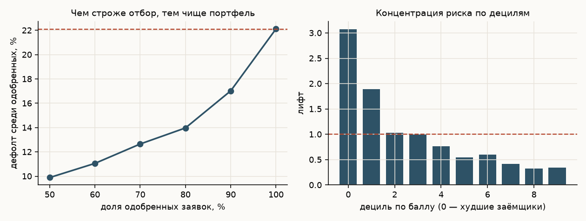
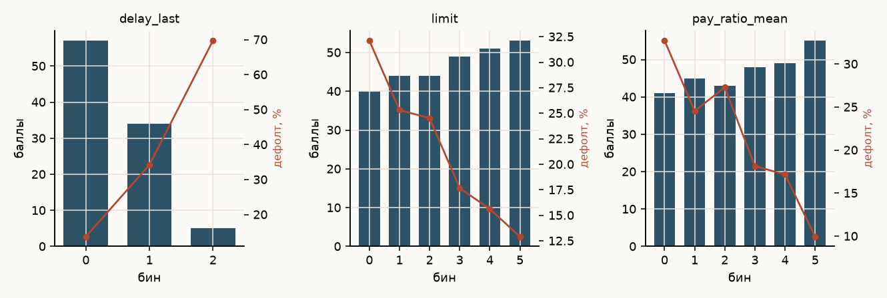
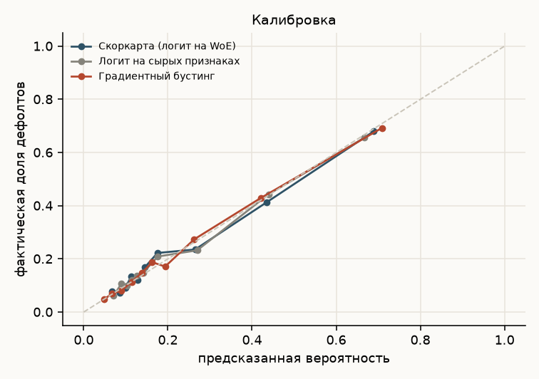

Ануар Беисов · 30 000 заёмщиков · Python: pandas, scikit-learn
Полный цикл скоринговой модели: от сырых выписок по картам до скоркарты в баллах и расчёта, что отбор даёт банку. Главный вопрос по ходу — сколько качества стоит интерпретируемость, за которую держатся риск-подразделения и регулятор.
UCI «Default of credit card clients»: 30 000 заёмщиков тайваньского банка, шесть месяцев истории платежей, счетов и погашений. Целевая переменная — выход в дефолт в следующем месяце, базовая доля дефолтов 22,1 %. Разбиение стратифицированное, 70 на 30: 21 000 на обучение, 9000 на отложенную проверку.
Исходные колонки напрямую непригодны: коды состояния платежа ничего не говорят сами по себе, а суммы счетов несопоставимы между клиентами с разными лимитами. Построено 18 признаков в трёх группах — глубина и динамика просрочки, использование лимита, дисциплина погашения, — плюс лимит и демография.
Для каждого признака построен WoE-биннинг и посчитан Information Value. Биннинг настраивается только на обучающей выборке, иначе информация о тесте протекает в модель.

| Признак | IV | Трактовка |
|---|---|---|
| Просрочка в последнем месяце | 0,878 | очень сильный |
| Число месяцев с просрочкой | 0,869 | очень сильный |
| Максимальная просрочка | 0,807 | очень сильный |
| Тренд просрочки | 0,405 | сильный |
| Месяцы без единого платежа | 0,267 | средний |
| Кредитный лимит | 0,174 | средний |
| Доля погашения счёта | 0,170 | средний |
| Образование | 0,035 | слабый |
| Возраст | 0,014 | бесполезный |
| Пол | 0,010 | бесполезный |
| Семейное положение | 0,005 | бесполезный |
В модель вошли 12 признаков из 18: отсеяны слабые по IV и дублирующие друг друга при корреляции выше 0,8 — из пяти признаков просрочки осталось три.
| Модель | AUC | Gini | KS | PR-AUC | Brier | AUC на 5-fold CV |
|---|---|---|---|---|---|---|
| Скоркарта (логит на WoE) | 0,759 | 0,518 | 0,395 | 0,522 | 0,139 | 0,771 ± 0,010 |
| Логит на сырых признаках | 0,754 | 0,509 | 0,403 | 0,516 | 0,140 | 0,766 ± 0,012 |
| Градиентный бустинг | 0,780 | 0,559 | 0,426 | 0,557 | 0,135 | 0,787 ± 0,009 |



| Одобряем заявок | Порог балла | Дефолт среди одобренных | Отсечено будущих дефолтов |
|---|---|---|---|
| 50 % | 567 | 9,9 % | 77,6 % |
| 60 % | 562 | 11,1 % | 70,0 % |
| 70 % | 553 | 12,7 % | 60,0 % |
| 80 % | 533 | 14,0 % | 49,5 % |
| 90 % | 508 | 17,0 % | 30,7 % |
| Без скоринга | — | 22,1 % | 0 % |
В худшем дециле по баллу дефолтит 68 % заёмщиков, в лучшем — 7,7 %. Лифт худшего дециля 3,07: риск концентрируется там, где и должен.
Коэффициенты регрессии переведены в баллы по стандартной схеме: PDO = 20, базовый балл 600 при шансах 20 к 1. Получается таблица из 60 строк вида «признак — интервал — баллы», которую можно отдать в кредитный комитет и объяснить каждое решение по заявке.


Практический вывод: скоркарта на 12 признаках снижает дефолт в портфеле с 22,1 % до 12,7 % при одобрении 70 % заявок и при этом остаётся полностью объяснимой. Бустинг стоит держать рядом как ориентир качества — он показывает, сколько ещё можно выжать, если отказаться от требования интерпретируемости.
Данные 2005 года и одного рынка: переносится методика, а не коэффициенты. Выборка одномоментная, поэтому out-of-time проверки нет — на реальном портфеле модель обязательно тестируется на более позднем периоде. Код и инструкция по воспроизведению — в репозитории, ссылка в карточке на сайте.